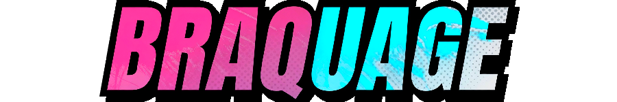
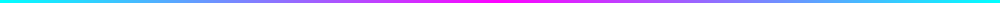
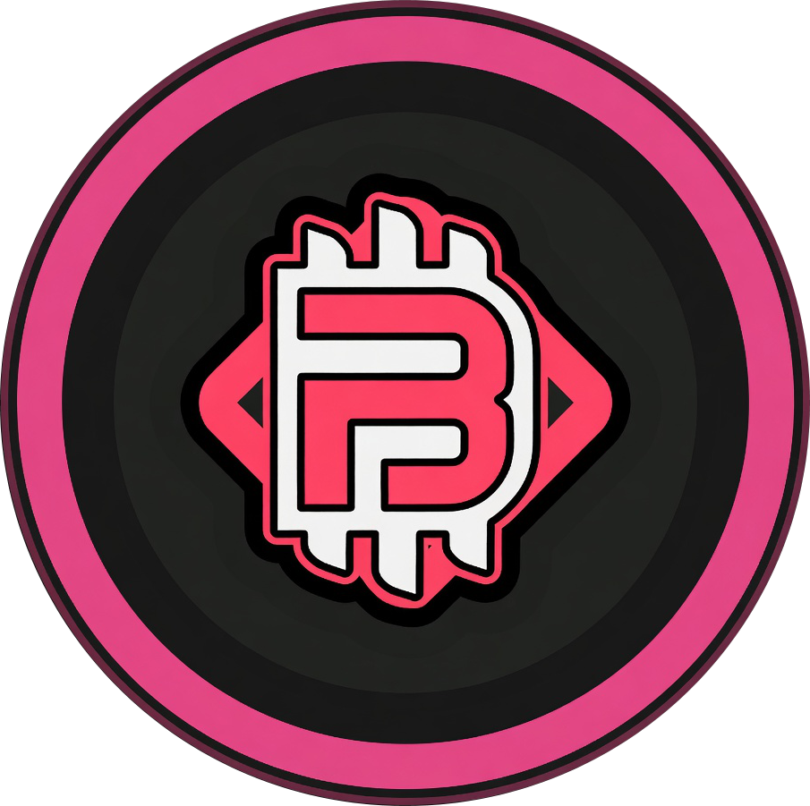
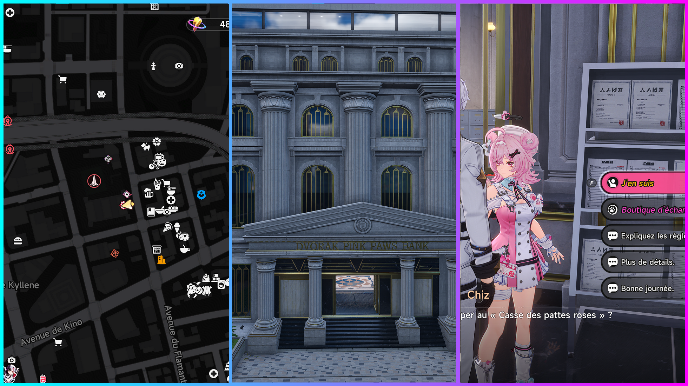
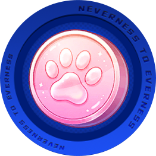
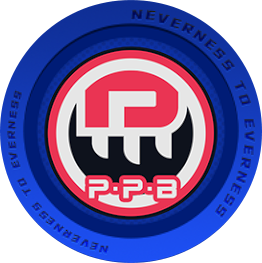
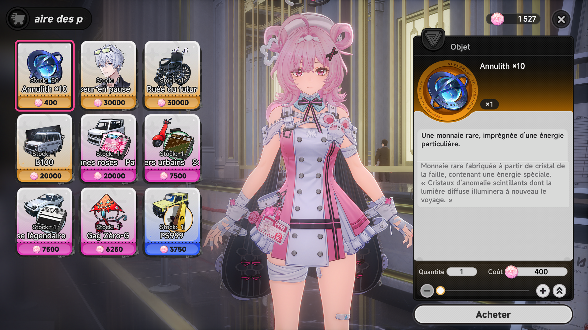

Tous les outils qu'il te faut pour évoluer dans le jeu !


Pardon ! Je me suis emporté avec le titre...
Une des nombreuses activités du jeu, rentable en plus, est donc le braquage des papattes roses.
Pour y avoir accès, il vous faut le niveau 10 de Magnat de la ville et avoir rencontrer Chiz.
Il suffira ensuite d'aller au siège de la banque dans le quartier de New Herland. Symboliser par cette icône sur la map :


C'est une activité disponible en solo comme en multi (léger avantage pour le multi que je vous explique plus bas).
Le principe est assez simple et en voici le fonctionnement :
Attention ! Je fait actuellement des tests, mais il semblerait que en mode solo, des cabines sont activés aléatoirement au début de la run (pas toutes), à vous ensuite de trouver celles disponibles. Mais pour en multijoueur, toutes les cabines sont activés dés le début et se désactives au fur et à mesure du temps.
Il éxiste plusieurs mini-boss sur les maps, ils n'apparaissent pas de manière systématique à chaque run donc à vérifier le plus rapidement possible.
Enfin si vous obtenez la carte magnétique du boss, il vous faudra aussi le cube doré pour y accéder et combattre Mammon.
Å la fin de l'activité vous obtiendrez deux type de récompenses en plus des fons : Les pièces papatte rose

et les crédits papatte rose
Vous allez me demander comment on fait pour ce repérer la dedans, il n'y a pas de map !
Pas de panique ! Je vous ai refait les maps avec le maximum de détails possible (vous pouvez les agrandirs en cliquant dessus).
En ce qui concerne les objets à récupérer, je vous ai lister les 10 plus rentables, ils apparaissent de manière aléatoire sur les points de spawn d'objets.
Pas compliqué, Chiz propose une boutique où utiliser les pièces papatte.
Dans cette boutique vous pourrez y acheter :
